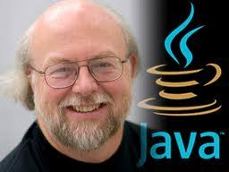

James Gosling
Father of Java
Contributions to Computer Science
James Gosling is best known as the creator of the Java programming language, a groundbreaking development that revolutionized the software industry. Java's platform independence and "write once, run anywhere" philosophy allowed it to become one of the most widely used programming languages in the world.
History
James Arthur Gosling was born in 1956 near Calgary, Alberta. He earned his Bachelor's degree in computer science from the University of Calgary in 1977, then went on to complete a PhD at Carnegie Mellon University (CMU) in 1983. At CMU, Gosling developed a variation of the popular Emacs display editor and created a version of the UNIX operating system for multiprocessor systems. One of his notable achievements at CMU was porting the UCSD Pascal p-code from a PERQ workstation to a DEC VAX computer system, which involved writing a VAX emulator. Gosling later cited this early work as an inspiration for the Java virtual machine, a concept that would allow code to run on multiple platforms by targeting a consistent virtual machine.
In 1984, Gosling joined Sun Microsystems, where he worked for 26 years after being recruited by Sun cofounder Andy Bechtolsheim. One of his first major projects at Sun, in collaboration with colleague David Rosenthal, was the development of a windowing system called SunDew, which was later renamed NeWS (Network-extensible Windows System). NeWS was designed for bitmapped displays on workstations and was intended to be cross-platform, but it was ultimately replaced by X-Windows.
In June 1991, Gosling, along with Mike Sheridan and Patrick Naughton, began the Java language project, originally referred to as "The Green Project." This project emerged from a prior initiative led by Sheridan to develop a new programming language and environment at Sun, beyond the widely used C++. The project initially aimed at computer systems but shifted focus toward digital convergence, which included integrating various smart devices like appliances, TVs, phones, and set-top boxes. The first demonstration of the language, named "Oak," took place on September 2, 1992, with a handheld media controller called Star-7 that featured a graphical user interface and a "home" metaphor.
Renamed Java, the language became one of the most widely used in the world, powering applications in desktop computing, scientific research, enterprise systems, web servers, embedded devices, and mobile technology. It has also become a mainstay in computer science education.
After Oracle acquired Sun in 2010, Gosling left the company and briefly worked at Google before joining Liquid Robotics, which develops autonomous ocean-going robots for oceanographic and atmospheric research. In May 2017, he joined Amazon Web Services as a Distinguished Engineer.
Java is C++ without the guns, clubs and knives.